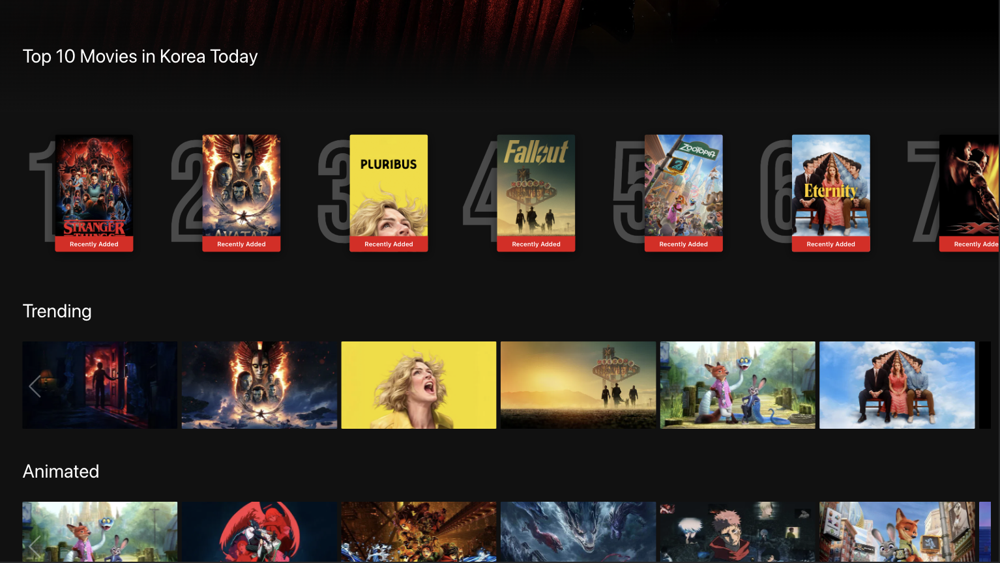
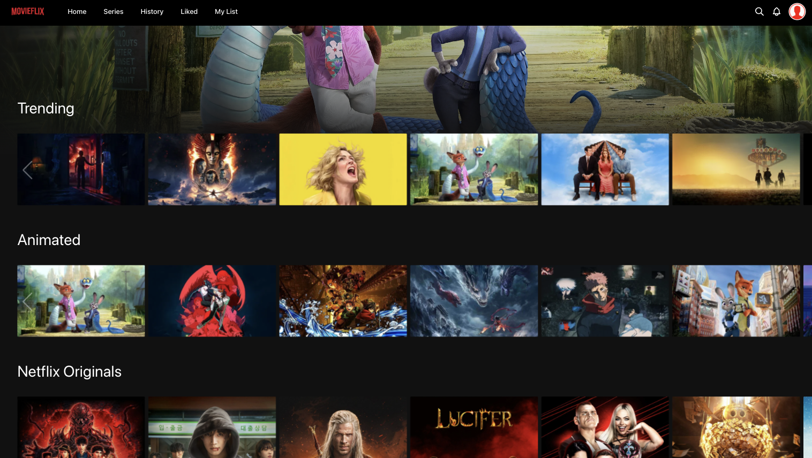
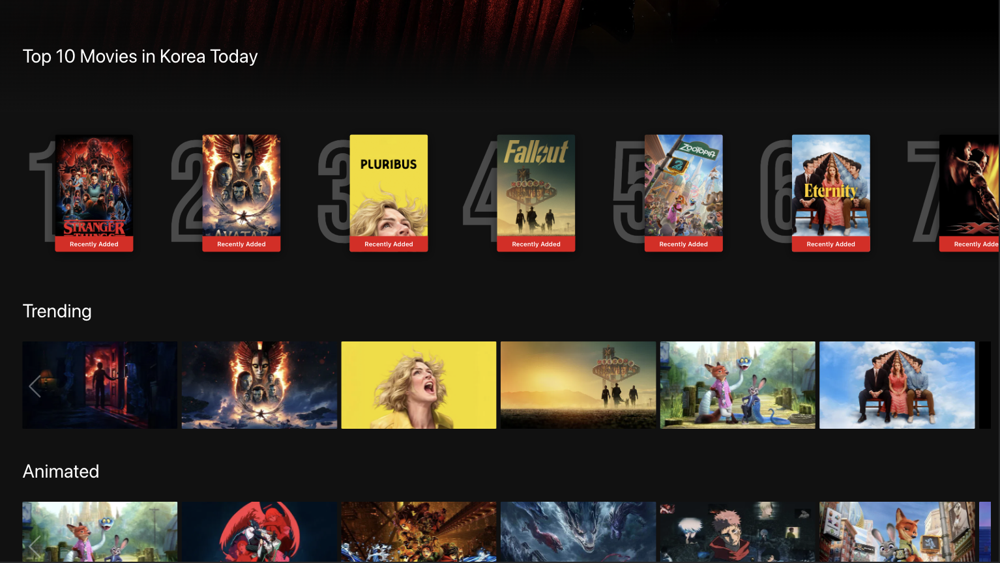
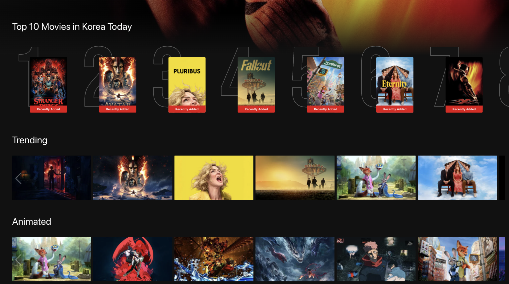
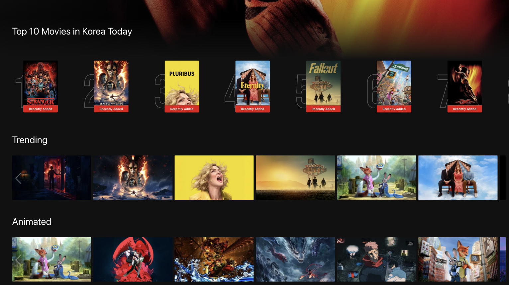
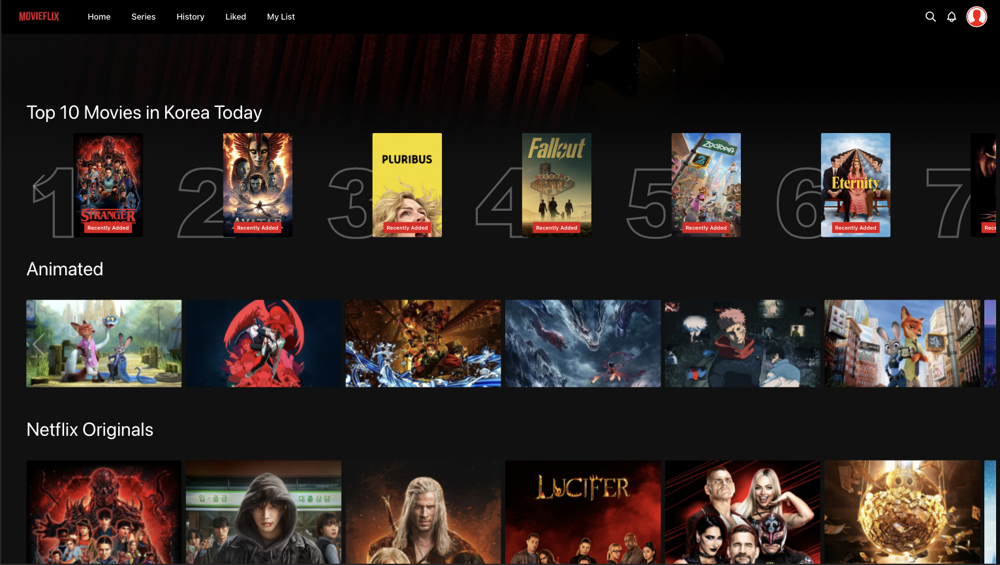
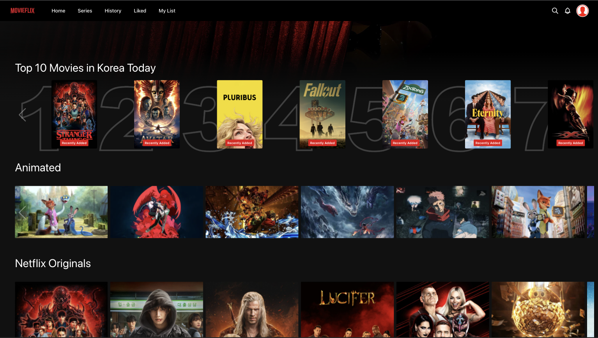
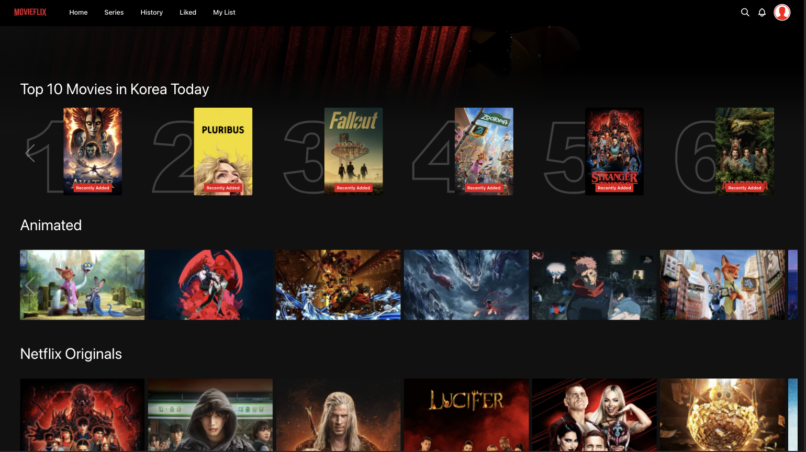
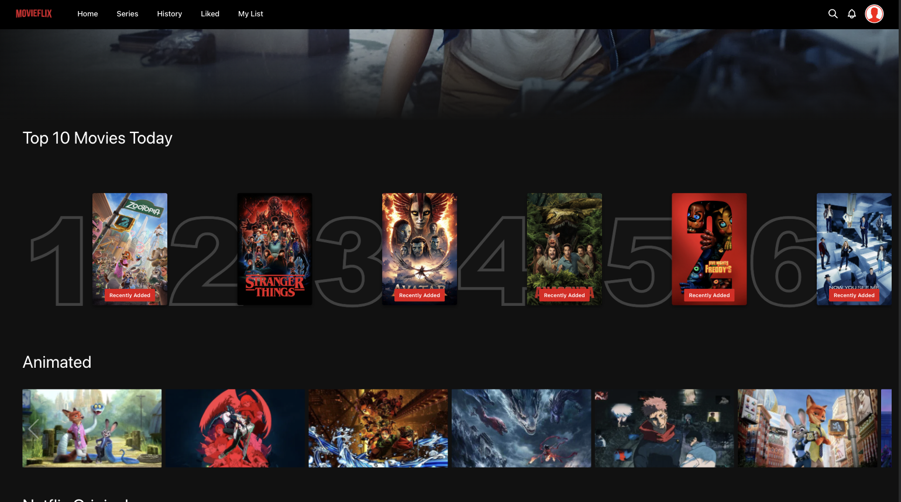
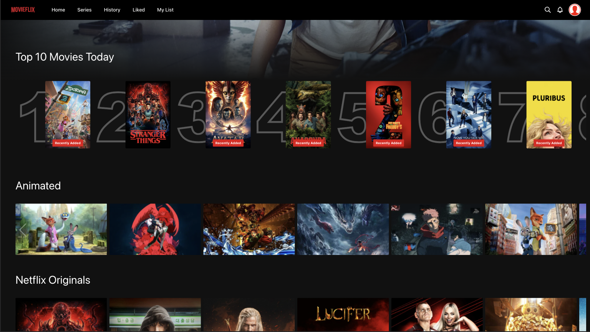

Attempt
1 / 3
Prompt
"[Image #1] 이미지를 참고해서 현재 홈의 첫번째 로우를 사진과 똑같은 디자인으로 반영해줘."
Result
Exploration #001
Design into Prototype
디자인 이미지와 설명만으로 UI를 정확히 업데이트 할 수 있는가?
The Challenge
클론 프로젝트의 첫 번째 콘텐츠 Row를 Target 디자인의 첫 번째 Row 스타일로 변경
Before
Target

기본 모델(Claude Opus 4.5)에 target 디자인 이미지와 자연어 설명만으로 비주얼 업데이트 시도
Prompt
"[Image #1] 이미지를 참고해서 현재 홈의 첫번째 로우를 사진과 똑같은 디자인으로 반영해줘."
Result
Prompt
"[Image #1] 폰트 라인이 너무 두꺼워. 숫자 크기도 맞지 않아. 간격도 target 이미지와 차이가 많이나."
Result
Prompt
"[Image #1] 여전히 숫자 폰트가 썸네일 이미지에 비해 너무 크고 각 아이템의 간격이 target 이미지와 달라."
Result
Insight
참고 이미지의 큰 특징은 잘 반영했으나, 세부 디테일은 반복 요청에도 정확히 반영되지 않았다. 모델 성능보다는 디자인 의도 전달 방식의 문제일 가능성이 있다.
Phase 01의 한계
UX/UI 전문 용어와 구조화된 프롬프트를 활용하면 정확도를 높일 수 있는지 검증이 필요하다.
Phase 02로 전환
UX/UI 전문 subagent 프롬프트를 활용한 구조화된 프롬프팅으로 정확도 향상 시도
Prompt
"/sc:design --think [Image #1] 이미지를 참고해서 현재 홈의 첫번째 로우를 사진과 똑같은 디자인으로 반영해줘."
Result
Prompt
"/sc:design --think [Image #1] 숫자 폰트의 크기가 target 이미지보다 작아. 그리고 썸네일과의 겹침 정도도 차이가 많이 나. 아이템 간 간격도 target 이미지와 달라."
Result
Prompt
"/sc:design --think [Image #1] 아이템 간 간격이 너무 좁고, 숫자 폰트의 높이가 썸네일과 같아야 하는데 약간 다르며, 숫자의 위치도 썸네일보다 약간 아래에 있어. target 이미지를 보고 다시 수정해줘."
Result
Insight
UX/UI 전문 프롬프트 없이 진행한 첫 번째 시도보다 준수한 결과를 얻었으나, 반복 요청을 통한 디테일 보정에는 여전히 한계가 있었다. AI가 업데이트된 화면을 직접 확인하지 못해 발생하는 문제일 수 있다.
Phase 02의 한계
AI가 업데이트한 화면을 직접 확인하며 이터레이션할 때 정확도가 높아지는지 검증이 필요하다.
Phase 03으로 전환
MCP Playwright를 활용하여 AI가 업데이트된 화면을 직접 확인하며 이터레이션하는 방식 시도
Prompt
"/sc:design --think --frontend-verify --playwright [Image #1] 이미지를 참고해서 현재 홈의 첫번째 로우를 사진과 똑같은 디자인으로 반영해줘."
Result
Prompt
"/sc:design --think --frontend-verify --playwright [Image #1] 숫자 폰트의 높이가 썸네일과 같아야 하는데 다르다. 썸네일과 겹쳐 있는 정도도 차이가 있고 아이템 간 간격도 이미지와 다르다. 똑같이 맞춰줘."
Result
Prompt
"/sc:design --think --frontend-verify --playwright [Image #1] 좋아. 이제 숫자의 높이만 이미지와 똑같이 썸네일의 높이와 맞추면 될 것 같아. 보이는 숫자의 영역이 썸네일의 높이와 같아야 해. 이미지를 참고해."
Result

Insight
업데이트된 화면을 AI가 직접 확인하도록 했을 때 폰트 굵기 등 더 세밀한 디자인 요소를 반영했으나, 폰트 높이와 썸네일 높이를 정확히 일치시키는 수준의 정밀한 조정에는 여전히 한계가 있었다. Claude Opus 4.5의 비주얼 해석 능력의 한계일 수 있다.
Conclusion
Claude Code Opus 4.5를 통한 디자인 업데이트는 큰 특징 반영은 꽤 잘해냈다.
하지만 디테일한 요소는 subagent UX/UI 전문 프롬프팅과 MCP 비주얼 이터레이션을 사용하여도 한계가 있었다.
디테일 요소를 정확하게 반영하기 위한 추가적인 방법이 필요하다.
Open Questions
비주얼의 해석 능력의 한계가 맞다면 어떻게 해결할 것인가?
Figma에서 HTML 변환 후 코드 정보를 추가하여 프롬프팅?
Nanobanana를 통한 디테일 요소 추출하여 반영?
디테일이 필요한 부분은 사용자가 직접 스크린샷에 포인팅하여 프롬프팅?
Phase 01 · Attempt 1
Result
Target
Prompt